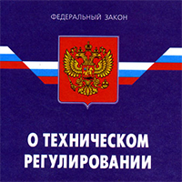

Закон о техническом регулировании
Закон РФ №184

ЮРИДИЧЕСКОЕ ЗНАЧЕНИЕ
Данный документ является комплексным законодательным актом РФ и устанавливает на высшем юридическом уровне на основе Конституции РФ и направлен на установление правил государственного регулирования требований к продукции, включая товары народного потребления, а также требований к работам и услугам в интересах потребителей.
ЧТО ДЕЛАЕТ
Обязательные технические нормы, согласно принятому Закону, могут быть установлены только в соответствии с "техническими регламентами", принимаемыми федеральными законами и международными договорами, и, при особой необходимости, указами Президента и постановлениями Правительства РФ на определенный срок до принятия соответствующих федеральных законов. Закон предусматривает освобождение предпринимателей от опеки органов исполнительной власти, кардинальное повышение уровня правового регулирования, дебюрократизацию экономики и имеет целью устранение необоснованных технических и административных препятствий в развитии предпринимательства, прекращение хозрасчетной деятельности надзорных органов, упорядочение в целом порядка разработки обязательных технических норм, уменьшение проблем при обязательной сертификации. Закон вводит новую систему государственного нормирования в данной области, систему нормативной документации.
ЧТО УСТАНАВЛИВАЕТ
Закон является комплексным законодательным актом РФ и устанавливает на высшем юридическом уровне на основе Конституции РФ:
- порядок разработки, принятия, применения и исполнения общеобязательных государственных требований к продукции, процессам ее производства, эксплуатации (использования), хранения, перевозки, реализации и утилизации;
- порядок осуществления тех же процедур в отношении необязательных требований к указанным объектам, а также к работам и услугам;
- систему нормативных и рекомендательных актов, в которых закрепляются соответствующие требования к регулируемым объектам;
- порядок осуществления работ по стандартизации регулируемых объектов;
- порядок подтверждения соответствия регулируемых объектов обязательным или необязательным требованиям;
- порядок организации и осуществления государственного контроля (надзора) за соблюдением общеобязательных требований к регулируемым объектам;
- порядок информации и финансирования работ в регулируемой области.
ОГРАНИЧЕНИЕ СФЕРЫ РЕГУЛИРОВАНИЯ
Можно выделить следующие ограничения сферы технического регулирования в рамках системы технических регламентов, представляющиеся целесообразными, как минимум, на начальных этапах подготовки технического законодательства:
- техническими регламентами регулируются не любые виды безопасности, а лишь связанные с возможностью непосредственного причинения вреда либо самой продукцией, либо в процессе ее производства;
- техническими регламентами регулируются лишь те виды деятельности, к субъектам которых государством не могут быть предъявлены обязательные требования иначе, чем посредством технического законодательства;
- техническими регламентами регулируется исключительно сфера технической безопасности, но не безопасности вообще;
- техническими регламентами покрывается преимущественно сфера регулирования государством разного рода видов деятельности, но не сфера выполнения государственными органами функций по обеспечению безопасности граждан, национальной безопасности и т.п.
ОБЛАСТИ ПРИМЕНЕНИЯ
- в области установления, применения и исполнения обязательных требований к продукции или к продукции и связанным с требованиями к продукции процессам проектирования, производства, строительства, монтажа, наладки, эксплуатации, хранения, перевозки, реализации и утилизации;
- в области применения на добровольной основе требований к продукции, процессам проектирования, производства, строительства, монтажа, наладки, эксплуатации, хранения, перевозки, реализации и утилизации, выполнению работ или оказанию;
- в области оценки соответствия.
ПРИНЦИПЫ ТЕХНИЧЕСКОГО РЕГУЛИРОВАНИЯ
Техническое регулирование осущетвляют в соответствии с рядом принципов:
- Принцип применения единых правил установления требований к продукции, процессам производства, эксплуатации, хранения. Перевозки, реализации и утилизации, выполнении работ или оказании услуг.
- Принцип соответствия типического регулирования уровню развития национальной экономики. Развитие материально технической базы а также уровней научно-технического развития.
- Принцип независимости органов аккредитации, органов по сертификации, изготовителей, продавцов, исполнителей и приобретателей.
- Принцип единой системы аккредитации.
- Принцип полного единства методов исследований (испытаний) и измерений при проведении процедур обязательной оценки соответствия.
- Принцип единства применений требований технических регламентов, не зависимо от видов или особенностей сделок.
- Принцип недопустимости ограничения конкуренции при осуществлении аккредитации и сертификации.
- Принцип недопустимости совмещения полномочий органов государственного контроля (надзора) и органов по сертификации.
- Принцип недопустимости совмещения одним органом полномочий на аккредитацию и сертификацию.
- Принцип недопустимости внебюджетного финансирования государственного контроля (надзора) за соблюдением требований технического регламента.
ЧТО ЗАМЕНИЛ
Федеральный Закон Российской Федерации "О техническом регулировании" № 184-ФЗ был принят 15 декабря 2002 года Государственной Думой и введен в действие с 1 июля 2003 года. Он заменяет Законы РФ "О стандартизации", "О сертификации продукции и услуг", а также положения многих других законодательных актов, которые затрагивают правоотношения в сфере разработки, утверждения и применения нормативно-технических документов, подтверждения соответствия и осуществления надзора за их соблюдением.
ЧТО ТАКОЕ ТЕХНИЧЕСКОЕ РЕГЛАМЕНТ
Технический регламент — это документ, который устанавливает обязательные требования к продукции, работам, услугам и процессам. Техническим регламентом может называться документ, принятый по специальной процедуре и устроенный особым образом. Принятие технических регламентов подразумевает, что министерства и ведомства не могут устанавливать обязательные требования в этой сфере: "Федеральные органы исполнительной власти вправе издавать в сфере технического регулирования акты только рекомендательного характера, за исключением случаев, установленных статьей 5 настоящего Федерального закона" (статья 5 относится к оборонной продукции). Что касается международных договоров, то технический регламент не может быть принят международным договором, заключенным на уровне министерств, ведомств или субъектов федерации. Такой договор должен быть ратифицирован Российским парламентом на федеральном уровне.
ПРАВИЛА ПРИНЯТИЯ ТЕХНИЧЕСКИХ РЕГЛАМЕНТОВ
Процедура принятия технических регламентов федеральными законами является основной. Российской Федерации имеет право издать постановление о техническом регламенте до вступления в силу соответствующего федерального закона. При этом порядок принятия такого постановления должен полностью соответствовать требованиям Закона "О техническом регулировании". Правом издать указ о техническом регламенте, не придерживаясь процедуры, предусмотренной в Законе, обладает Президент Российской Федерации. Однако такой указ может быть издан в исключительных случаях, при возникновении обстоятельств, приводящих к непосредственной угрозе жизни и здоровью граждан, окружающей среде, жизни или здоровью животных и растений.
ОБЯЗАТЕЛЬНЫЕ ТРЕБОВАНИЯ К ТЕХНИЧЕСКИМ РЕГЛАМЕНТАМ
Обязательные требования к объектам технического регулирования составляют основу технического регламента. Обязательно указано, что это должны быть требования, обеспечивающие:
-
безопасность жизни и здоровья граждан;
-
безопасность имущества физических и юридических лиц, государственного и муниципального имущества;
-
охраны окружающей среды; охраны жизни и здоровья животных и растений;
-
предупреждение действий, вводящих в заблуждение потребителей.
ТЕХНИЧЕСКИЕ РЕГЛАМЕНТЫ РЕГУЛИРУЮТ
Технические регламенты с учетом степени риска причинения вреда устанавливают минимально необходимые требования, обеспечивающие:
- безопасность излучений;
- биологическую безопасность;
- взрывобезопасность;
- механическую безопасность;
- пожарную безопасность;
- промышленную безопасность;
- термическую безопасность;
- химическую безопасность;
- электрическую безопасность;
- ядерную и радиационную безопасность;
- электромагнитную совместимость в части обеспечения безопасности работы приборов и оборудования;
- единство измерений.